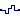

Library of partial blocks for components with clocked Real signals
This package contains partial blocks that are used to construct blocks operating on clocked Real signals.
Extends from Modelica.Icons.InterfacesPackage (Icon for packages containing interfaces).
| Name | Description |
|---|---|
| SamplerIcon | Basic graphical layout of block used for sampling of Real signals |
| PartialSISOSampler | Basic block used for sampling of Real signals |
|  PartialSISOHold | Basic block used for zero order hold of Real signals |
| Block with clocked single input and clocked single output Real signals | |
| Block with multiple clocked input and multiple clocked output Real signals | |
| PartialClockedSO | Block with clocked single output Real signal |
| Interface for SISO blocks with Real signals that add noise to the signal |
Basic graphical layout of block used for sampling of Real signals
Basic block used for sampling of Real signals
Extends from Clocked.RealSignals.Interfaces.SamplerIcon (Basic graphical layout of block used for sampling of Real signals).
| Name | Description |
|---|---|
| u | Connector of continuous-time, Real input signal |
| y | Connector of clocked, Real output signal |
Basic block used for zero order hold of Real signals
| Name | Description |
|---|---|
| y_start | Value of output y before the first tick of the clock associated to input u |
| Name | Description |
|---|---|
| u | Connector of clocked, Real input signal |
| y | Connector of continuous-time, Real output signal |
 Modelica.Clocked.RealSignals.Interfaces.PartialClockedSISO
Modelica.Clocked.RealSignals.Interfaces.PartialClockedSISOBlock with clocked single input and clocked single output Real signals
Extends from Clocked.ClockSignals.Interfaces.ClockedBlockIcon (Basic graphical layout of block where at least one input or output is a clocked variable).
| Name | Description |
|---|---|
| u | Connector of clocked, Real input signal |
| y | Connector of clocked, Real output signal |
Modelica.Clocked.RealSignals.Interfaces.PartialClockedMIMOBlock with multiple clocked input and multiple clocked output Real signals
Extends from Clocked.ClockSignals.Interfaces.ClockedBlockIcon (Basic graphical layout of block where at least one input or output is a clocked variable).
| Name | Description |
|---|---|
| nin | Number of inputs |
| nout | Number of outputs |
| Name | Description |
|---|---|
| u[nin] | Connector of clocked, Real input signals |
| y[nout] | Connector of clocked, Real output signals |
Block with clocked single output Real signal
Extends from Clocked.ClockSignals.Interfaces.ClockedBlockIcon (Basic graphical layout of block where at least one input or output is a clocked variable).
| Name | Description |
|---|---|
| y | Connector of clocked, Real output signal |
Modelica.Clocked.RealSignals.Interfaces.PartialNoiseInterface for SISO blocks with Real signals that add noise to the signal
Interface block for uniformly distributed noise in some range noiseMin … noiseMax applied to a clocked Real input signal; the resulting noisy signal is provided as clocked Real output signal.
Extends from Clocked.RealSignals.Interfaces.PartialClockedSISO (Block with clocked single input and clocked single output Real signals).
| Name | Description |
|---|---|
| noiseMax | Upper limit of noise band |
| noiseMin | Lower limit of noise band |
| Name | Description |
|---|---|
| u | Connector of clocked, Real input signal |
| y | Connector of clocked, Real output signal |